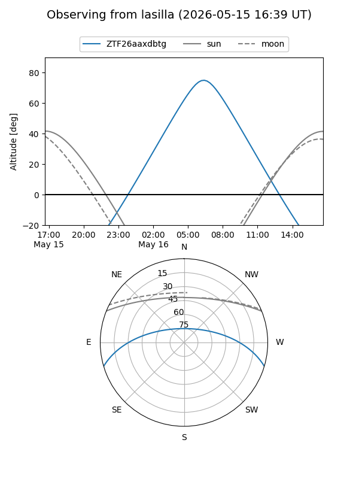
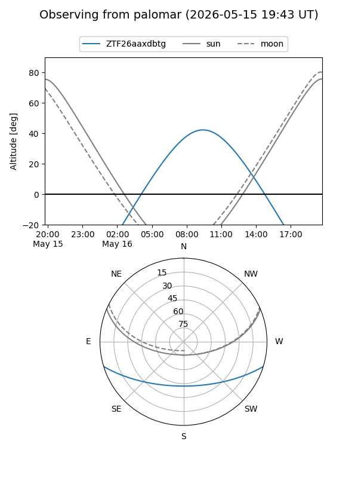

ZTF26aaxdbtg
Target ZTF26aaxdbtg at 2026-05-16 09:49
Aliases and brokers:
FINK: link
Lasair: link
ALeRCE: link
alt names
ZTF26aaxdbtg (ztf,fink_ztf)
Coordinates:
equatorial (ra, dec) = 258.1511,-14.29266
equatorial (HMS+DMS) = 17:12:36.26,-14:17:33.56
galactic (l, b) = (8.2582,+14.35503)
Flags:
Photometry:
last ztfg=19.17
1 ztfg detections
Lightcurve
Visibility


Additional plots